Основний розділ довідки
- Зміст
- 1. Вступ
- 2. Файли конфігурації
- 3. Інтерфейс
-
- 3.1. Рядок меню
-
- 3.1.1. Меню "Файли"
- 3.1.2. Меню "Виділення"
- 3.1.3. Меню "Команди"
- 3.1.4. Меню "Вкладки"
- 3.1.5. Меню "Вид"
- 3.1.6. Меню "Налаштування"
- 3.1.7. Меню "Допомога"
- 3.2. Панель інструментів
- 3.3. Панель кнопок дисків
- 3.4. Кнопка меню дисків
- 3.5. Панель заголовків вкладок
- 3.6. Ім’я поточного каталогу
- 3.7. Панель заголовків колонок
- 3.8. Рядок стану
- 3.9. Вікно консолі
- 3.10. Командна строка
- 3.11. Панель кнопок функціональних клавіш
Double Commander — продукт відчизняного програміста Олександра Коблова (Alexx2000@mail.ru), заснований на Sexi Commander (автор — Radek Cervinka, radek.cervinka@centrum.cz).
Double Commander це кросплатформенний (що означає для Linux і для Windows) файловий менеджер, з підтримкою WCX, WFX, WDX, WLX і DSX плагінів. Останній формат — це власні пошукові плагіні DC. Потрібно відмітити, що у Windows версії Double Commander працює багато плагінів від Total Commander (TC), а це більше половини з тих, якими я користувався). А Linux версія, взагалі не має аналогів подібногу типу. Після встановлення у складі DC вже є WCX (архіваторні) плагіни і можна працювати з архівами cpio, deb, rpm, bz2, rar, zip, tar, gz, tgz як з каталогами, пошуковий плагін (DSX) і плагін для перегляду відео з допомогою Mplayer в Linux (WLX), інші можна встановити власноруч.
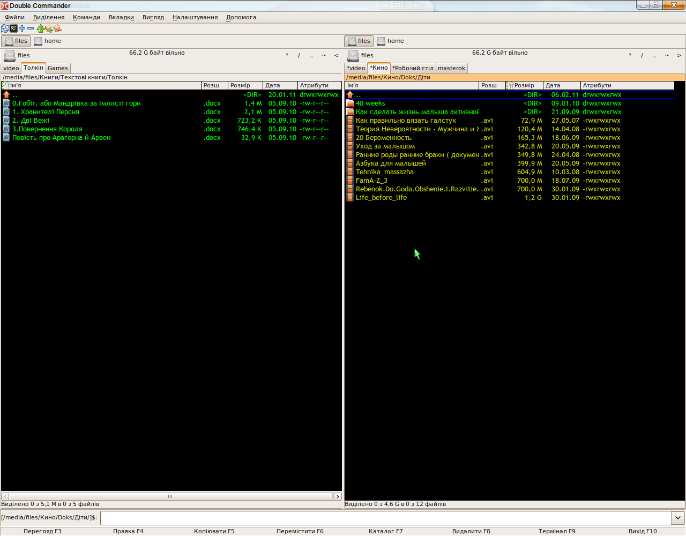
1. Вступ
На сторінці завантаження програми ми бачимо, кілька доступних для скачування варіантів. Спершу необхідно вибрати варіант для вашої операційної системи (Windows чи Linux) і необхідну розрядність (32 чи 64). Післяе чого можемо обрати необхідний вид дистрибутиву. Для Windows це виконуваний файл .ехе чи архів .zip (котрий являється так званою portable версією).
Для Linux є варианти, для найпоширеніших дистрибутивів і рабочих столів. Для завантаження пропонуються вже готові пакети deb для Debian-подібних систем (наприклад, Ubuntu і похідні), а також пакети rpm для Linux Mandriva (одразу необхідно відмітити, що на момент написання статті, версії з QT-інтерфейсом для 64 розрядних систем немає). Також в наявності є portable версія у вигляді архіву .tar.bz2, вона ж являється і вихідним кодом, з якого можна зібрати програму самому. Що стосується середовища робочого столу, то тут є варіанти для Gnome і інших середовищ, відмінних від KDE, це версія заснована на бібліотеці Gtk2, і для KDE версія заснована на QT відповідно. Скажу наперед, що з репозиторія ця программа поки що недоступна.
При першому запуску Double Commander (він перекладений на 8 мов) автоматично визначить мовні налаштування системи, обере мову, яка в системі являється головною і визначить його для свого інтерфейсу. В дальнійшому мову можна змінити в меню "Налаштування → Налаштування → Мова". Також Double Commander підхоплює тему оформлення, встановлену в системіе. Виходить щось на зразок цього:
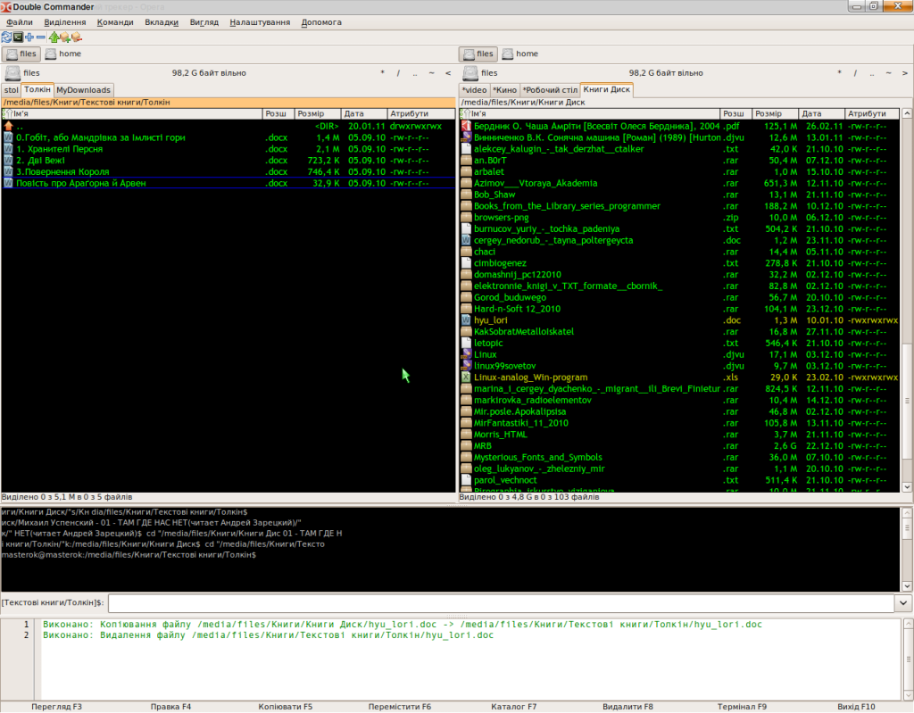
Як видно з малюнка, нам доступні дві файлові панелі, чорненьке вікно терміналу, під яким знаходиться командна строка (як в TC) і саме нижне вікно це вікно звіту (в ньому відображаються всі дії, які виконує файловий менеджер).
2. Файли конфігурації
Свої налаштування Double Commander зберігає в конфігураційних файлах або в каталозі програми або в домашньому каталозі користувача. Основними файлами являються:
doublecmd.ini — всі головні налаштування програми (по аналогії з wincmd.ini)
default.bar — налаштування панелі інструментів (по аналогії с TC)
editor.col — налаштування редактора
shortcuts.ini — налаштування горячих клавіш
cmdhistory.txt — історія командної строки
dirhistory.txt — історія зміни каталогів
edithistory.txt — історія файлів, що редагувалися (з допомогою F4)
maskhistory.txt — історію застосування масок, для пошуку, виділення и т.п.
doublecmd.log — історія всіх операцій з вікна звіту
doublecmd.ext.example — приклад налаштувань асоціацій файлів
Структура цих файлів докладно описана у відповідних разділах довідки. Практично всі налаштування в цих файлах можно міняти з GUI програми.
3. Інтерфейс
Інтерфейс Double Commander'а
3.1. Рядок меню
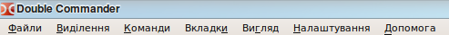
Рядок меню дозволяє отримати доступ до всіх можливостей Double Commander. Але не забувайте, що більшість дій можна виконати і іншими способами: з допомогою комбінацій клавіш чи кнопок на панелі інструментів.
3.1.1. Меню "Файли"
В цьому меню зібрані майже всі операції, які можна використовувати для файлів. Розглянемо всі пункти по порядку.
Створити посилання (команда cm_HardLink). Якщо вибрати цей пункт, то Double Commander створить жорстке посилання на файл, який знаходиться під курсором, і помістить його у папку, відкриту в другій панелі.

Ім’я посилання — тут вказується місцезнаходження посилання і його ім’я. Іменем являеться останне слово яке стоїть після останнього слешу в рядку
На що вказує — цей рядок показує на шо буде "посилатися" посилання.
Створити символічне посилання (команда cm_SymLink). Все аналогічно попередньому пункту, тільки посилання буде символьне.
Вибравши пункт Властивосі... (команда cm_FileProperties) ми отримаємо ось таке вікно
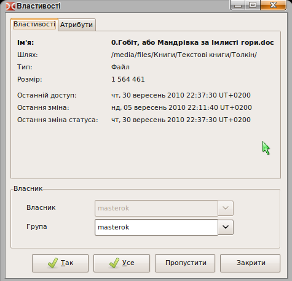 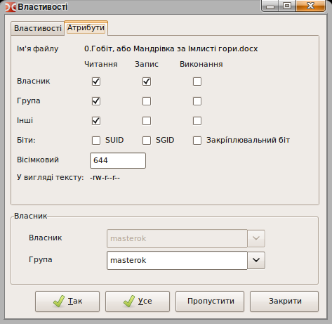
в якому вказано ім’я файлу чи папки, місцезнаходження, размір, час запису і останнього звертання, а також власник і група. На вкладці "Атрибути" можно змінити рівень доступу до файлу (якщо у вас є на це права). Діє тільки на файл чи папку під курсором.
Скориставшись пунктом Редагувати коментар (команда cm_cm_EditComment) ви можете створювати чи редагувати коментарі до файлів і папок. Підтримуються кодування UTF, ISO, KOI, ANSI і т. д.
Розрахувати займаєме місце (команда cm_CalculateSpace) розраховує розмір виділених папок і файлів в зручних для сприняття округлених одиницях і в байтах
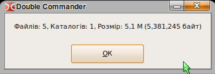
Порівняти по вмісту (команда cm_CompareContents) викликає вікно з двума полями, в яких відкриваються файли для порівняння (зазвичай текстові).
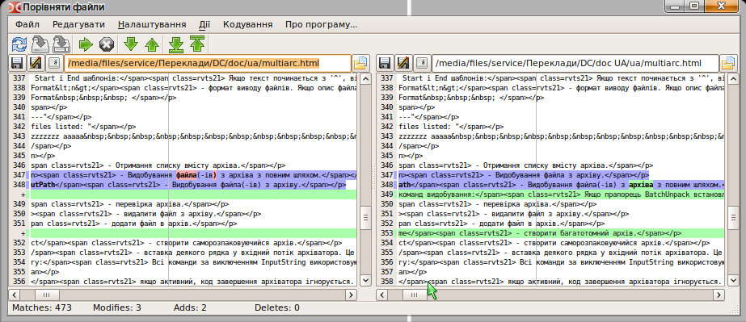
Порівняти файли — запускає процес порівняння файлів. Рядки, в яких є відмінності, виділяються червоним кольором (за замовчуванням). Присутня синхрона вертикальна і горизонтальна прокрутки. Файли можна вибирати будь-які.
Наступне — виконати перехід на наступну відмінність.
Попередне — виконати перехід на попередню відмінність.
Двійковий — спосіб порівняння файлів, результат виводится у двійковому вигляді.
Одночасна прокрутка — дозволяє продивлятися файли с одночасною синхронною прокруткою в обох вікнах.
Закрити — закриває вікно порівняння файлів.
Мультиперейменування (команда cm_MultiRename)

Дозволяє перейменовувати групу файлів по певній масці. Наприклад, кілька файлів з різними іменами у файли з іменами "Малюнок 1", "Малюнок 2", "Малюнок 3" и т. д. Виділяємо файли які необхідно перейменувати і отримуємо вікно (див. вище). В головному полі бачимо який файл в який буде перейменований.
В групі Маска можно задати маску для імені файлу і розширення. Тут доступні наступні макроси:
[N] — буде те саме, що і у вихідного файлу
[Nx] — буде взята будь-яка по рахунку буква (х-номер букви у слові). Наприклад, для імені файлу "Рисунок" вибір [N5] призведе до того, що буде узята тільки буква «н» (п’ята по рахунку)
[Nx:x] — будуть узяті букви з х-ої по х-ту. Наприклад, для "Рисунок" і [N1:4] отримаємо "Рису"
[C] — позначає лічильник, його параметри вказані в групі Лічильник
можна суміщати використання макросів і свій власний текст (як на малюнку).
Група Знайти і замінити допоможе, коли необхідно провести заміну частини імені файлу (на малюнку буква "а" замінюється на "и" тому назва буде не "рас", а "рис"). Доступна робота з регулярними виразами
В групі Лічильник задаються параметри цього самого лічильника: початок нумерації (з якого числа буде починатися нумерація нових імен). Ширину числа 1, 01, 001, 0001 і т. д. до 10 знаків. Інтервал (крок) — на скільки буде змінюватися номер в наступному по порядку файлі (в моєму випадку 11).
В списку Стиль імені файлу можна вибрати один з варіантів:
Без змін — нові назви будуть вказуватися аналогічно старим.
ПРОПИСНІ — нові імена і розширення будуть складатися з великих літер.
строчні — нові імена і розширення будуть складатися тільки з маленьких літер.
З прописної — нові імена файлів будуть починатися з великої літери.
В групі Результат можна включити ведення звіту роботи і вказати місцезнаходження лог-файлу.
Вибравши пункт Упакувати (команда cm_PackFiles) ми викличемо стандартний діалог упакування файлів в архіви zip, tar.gz, tgz, може бути і rar, якщо в системі встановлено відповідний архіватор.
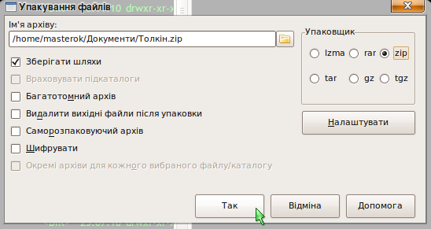
Звортню дію можна виконати, скориставшися пунктом Розпакувати (команда cm_ExtractFiles). Цей самий діалог викликається при копіюванні файла з архіву, якщо ви зайшли туди як в каталог.
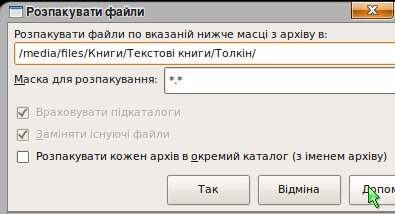
В першому рядку вказується каталог призначення (то бто куди буде розпакований архів). Його можна змінити вручну чи натиснувши на кнопку з права від рядка. В полі Маска для розпакування, можна вказати які файли будуть розпаковані, або з яким небудь одним розширенням, або з одним відповідним іменем. Залежно від того як налаштувати маску. Напримклад на малюнку будуть розпаковані файли тільки з розширенням .txt. При відсутності такої необхідності, маску чіпати не потрібно. Історія маски доступна у випадаючому списку. Галочка Розпакувати кажний архів в окремий каталог (з іменем архіву) дозволяє розпакувати одразу кілька виділених архівів, кожний в свою папку.
Пункти Разрізати файл і Зібрати файли (команди відповідно cm_FileSpliter і cm_FileLinker)
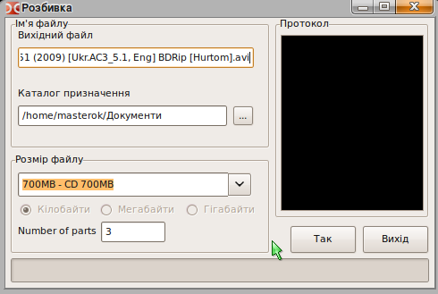
Вихідний файл — вказується на файл, який необхідно розрізати.
Каталог призначення — слід вказати в яку папку будуть поміщені частини файлу після його розрізання
Размір частин файлу — вказуються розміри частин на які буде порізаний файл. Можна ввести як свое значення, так і скористатися передустановленим:
1457664B — 3.5" — розмір для дискет формату 3.5 (флоп)
98078KB - ZIP 100MB — розмір для дискет формату ZIP, якщо є ZIP привод з дискетами)))
650MB - CD 650MB — розміер для CD диску
700MB - CD 700MB — розмір для CD диску
Після натискання на кнопку OK, в каталозі призначення отримуте частини цього файлу потрібного розміра з розширенням .split. Щоб зібрати файл, виділяєте всі частини файлу з розширенням .split і вибираєте Зібрати файли(cm_FileLinker). Вказуєте з яких частин і в якому порядку необхідно провести сборку.

Ця функція корисна якщо файл дуже великий, а носій маленький. Є можливість перенести файл по частинам (по аналогії з TC).
Пункт Порахувати контрольні суми... (команда cm_CheckSumCalc) використовується для підрахунку контрольних сум (MD5 і SHA1) файлів з ціллю перевірки їх цілостності.
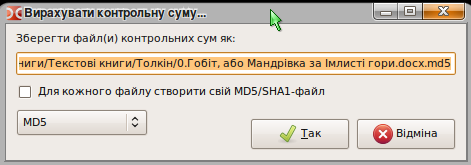
Зберегти файл(и) контрольних сум як: — рядок вказує де і під якою назвою буде збережений файл, який буде містити розраховану контрольну суму.
Для кожного файлу створити окремий MD5/SHA1-файл — якщо сума рахується для кількох виділених файлів, то для кожного виділеного файлу буде створений окремий файл з контрольною сумою, інакше буде створений один загальний, в який внесуться суми всіх вмділених файлів.
MD5 і SHA1 — вибір алгоритму по якому будуть підраховані контрольні суми файлів.
3.1.2. Меню "Виділення"
Тут зосереджені команди, за допомогою яких можна виділяти групу файлів а також проводити різні дії з виділенням.
Перший і другий пункти Виділити групу і Зняти виділення з групи (команди cm_MarkPlus і cm_MarkMinus). Це команди виділення групи файлів по масці. В масці можна вказати частину назви імен файлів чи розширення.

Наприклад, будуть виділені всі файли у каталозі з розширенням .png, кнопка зі стрілкою вниз в кінці рядка дает доступ до історії маски.
Третій і четвертий пункти Виділити все (команда cm_MarkMarkAll) і Зняти виділення зі всіх (команда cm_MarkUnmarkAll). З їх допомогою можна виділити всі файли і папки які знаходяться в директорії вибраної панелі і зняти цео виділення.
П’ятий пункт це Інверсія виділення (команда cm_MarkInvert). При цьому зі всіх виділених файлів і папок в поточному каталозі виділення зніметься, а всі невідмічені навпаки будуть виділені.
Шостий і сьомий пункт Виділити файли по розширенню (команда cm_MarkCurrentExtension)і Зняти виділення по розширенню (команда cm_UnmarkCurrentExtension). З допомогою цієї функції можна виделити всі файли, які мають те саме розширення, що і файл під курсором. А також зняти виділення з файлів виділених таким способом.
Восьмий і дев’ятий пункт Копіювати імена файлів в буфер (команда cm_CopyNamesToClip) і Копіювати повні імена файлів (команда cm_CopyFullNamesToClip). Перша команда копіює список імен всіх виділених файлів в буфер обміну. Друга команда копіює повні імена (шлях + ім’я) виділених файлів в буфер обміна.
3.1.3. Меню "Команди"
Першиым пунктом йде Пошук (команда cm_Search).

В рядку Шукати файли задаємо маску, по якій буде здійснюватися пошук.
Нижче, в рядку В каталозі вказуємо початковий каталог для пошуку, якщо він відомий. Інакше залишаємо "/".
Глубина рекурсії підкаталогів може приймати значення:
Тільки поточний
Число рівнів (на ваш вибір от 1 до 100)
Всюди (необмежена)
Це налаштування керує глубиною "занурення" по дереву каталогів під час пошуку. Вказавши "Тільки поточний", ми обмежуємо пошук папкою, вказаною в рядку "У каталозі" (підпапки переглядатися не будуть).
За необхідності можна застосовувати регулярні вирази.
Якщо встановлена галка Шукати у файлі — під час пошуку буде виконуватися перегляд вмісту знайдених файлів і в результат підуть тільки ті, які містять слово, вказане в рядку З текстом. Також, під час пошуку можна одразу замінити дане слово на інше поставивши галочку Заменити текст і вказавти на що замінити, в рядку нижче цієї опції.
З врахуванням регістру — вказує, на те, що великі літери слід відрізняти від маленьких. Тоб то "Fallout" і "fallout" будуть сприйматися як різні.
Файли, що НЕ містять цей текст, спонукає програму показувати тільки ті файли, в вмісті яких не знайдені слова вказані в полі З текстом. Тут же можна вказати кодування, підтримуєтся UTF, ISO, KOI, DOS, ANSI і т. д.
Використовувати пошуковий плагін: пошук здійснюється з допомогою пошукового плагіну Locate.
В нижній частині вікна знаходиться поле, в якому відображаються результати пошуку, і кілька кнопок.
Перегляд — відкриває обраний файл у вікні переглядача (F3).
Новий пошук — очищує поле результатів і дозволяє запустити пошук знову (можливо, з другими умовами).
Перейти до файлу — закриває вікно пошуку, і відкриває Double Commander в папі де знаходиться виділений файл (курсор встановлюється на цьому файлі).
Файли на панель — видає список файлів з повними шляхами до них у файловій панелі Double Commander.
Вкладка Розширений дозволяє вказати додаткові параметри для пошуку файлу: Дата (від і до), Час (від і до), Размір файлу (від і до), а також атрибути і вік файлу.
Другий пункт Особистий список каталогів (команда cm_DirHotList). Ця команда аналогічна кліку на кнопку "*".
При виборі цього пункту отримуємо випадаюче меню, з якого можна вибрати наперед додані закладки, додати поточне місцезнаходження в закладки (а якщо воно є, то видалити) і налаштувати вже додані. При налаштуванні у вікні, що відкривається, можна зробити теж саме.
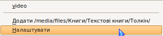
Додати — відкриває вікно діалогу додавання нової закладки.
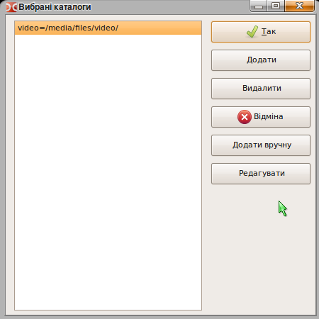
Видалити — видаляє обрану закладку.
Додати вручну — відкриває рядок, куди вводиться шлях до нової закладки вручну.
Редагувати — дозволяє вручну відредагувати вже додану закладку (Налаштування зберігається у doublecmd.ini, в секції [Configuration] параметр HotDir= всі закладки вписуються через кому).
Третій пункт Пуск терміналу (команда cm_RunTerm) — відкриває терміинал в поточній папці (налаштування терміналу вказані в розділі Пуск терміналу).
Четвертий пункт Відкрити VFS (віртуальна файлова система) використовується плагінами (WFX, WCX і т. д.), котрим для роботи потрібна своя файлова система. При додаванні і налаштуванні відповідних плагінів, по команді буде відкриватися їх список, надаючи можливість роботи з ними.
П’ятий пункт Поміняти панелі місцями (команда cm_Exchange), в правій панелі буде відкритий той каталог, який був відкритий в лівій і навпаки.
Шостий пункт Дві однакові панелі (команда cm_TargetEqualSource) — відкриває в неактивній панелі той самий каталог, який відкритий в активній, аналогічно натиску кнопки "=".
3.1.4. Меню "Вкладки"
Як видно з назви, призначено для керування вкладками файлової панелі.
Перший пункт Новая вкладка (команда cm_NewTab) — додає новую вкладку на панель, відкриває в ній той самий каталог, в якому була відкрита попередня активна. І переходить на неї.
Другий пункт Відкрити каталог в новій вкладці (команда cm_OpenDirInNewTab) — відкриває нову вкладку на панелі в тому каталозі, який знаходиться під курсором, не роблячи вкладку активною.
Третій пункт Видалити вкладку (команда cm_RemoveTab) — закриває поточну активну вкладку, переходить на наступну вкладку, якая знаходится правіше, якщо справа нема, то на попередню зліва.
Четвертий пункт Видалити всі вкладки (команда cm_RemoveAllTabs) — закриває всі неактивні вкладки, якщо серед них є заблоковані, то видає відповідний вопрос.
П’ятий пункт Заблокувати, з можливістю зміни каталога (команда cm_ToggleLockDcaTab) — у вкладці заблокованої таким чином, можна змінити каталог, але при переключенні на іншу вкладку і поверненні (а також при перезапуску DC), буде відкритий каталог, який був в момент блокування.
Шостий пункт Заблокувати вкладку (команда cm_ToggleLockTab) — робить вкладку заблокованою, при переході в інший каталог, відкривається нова вкладка, і работа вже йде в ній. А в заблокованій завжди відкритий один той самий каталог.
Сьомий і восьмий пункти Переключитися на наступну (команда cm_NextTab) і попередню вкладку (команда cm_PrevTab) — відповідно переключається на вкладку правіше (наступна) і вкладку лівіше (попередня).
3.1.5. Меню "Вигляд"
Дозволяє керувати відображенням вмісту файлових панелей.
Перші п’ять пунктів: Сортувати по імені (команда cm_SortByName), Сортувати по розширенню (команда cm_SortByExt), Сортувати по розміру (команда cm_SortBySize), Сортувати по даті (команда cm_SortByDate), Сортувати по атрибутам (команда cm_SortByAttr) — відповідає за сортування у файлових панелях по імені, розширенню, розміру, даті і атрибутам відповідно. Аналогічних результатів можна добитися, клацнувши лівою кнопкою миші по потрібному заголовку колонок файлових панелей.
Шостий пункт Обернений порядок (команда cm_ReverseOrder) —сортує файли і папки у файлових панелях в протилежному порядку, по відношенню до поточного.
Сьомий пункт Оновити (команда cm_Refresh) — змушує Double Commander перечитати вміст каталогу.
Восьмий пункт Показувати системні файли (команда cm_ShowSysFiles) керує відображенням системних файлів і папок. В Лінуксі це файли і папки, назва яких починаєтся з крапки. Аналогічне налаштуванню — Показувати системні файли.
3.1.6. Меню "Налаштування"
Перший пункт Основні (команда cm_Options) викликає діалогове вікно "Основні". Саме тут знаходяться основні налаштування нашої програми!!! Розглянемо всі розділи цього вікна по порядку.
Перший розділ, це Мова. Тут ми бачимо 13 варіантів перекладу. Вибрати необхідно той, який ви краще за інші розумієте.

Наступний розділ Поведінка
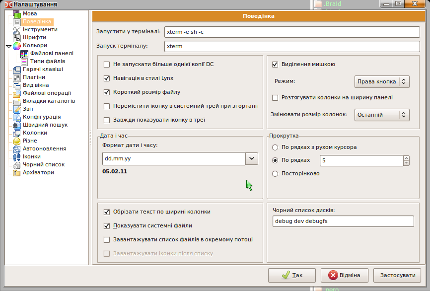
Рядок Запустити в терміналі: у меня записано gnome-terminal -e sh -c, а за замовчуванням xterm -e sh -c. Тут можна вписати свою програму, яку ви використовуєте в якості терминалу, в своєму рабочому оточенні (у мене Gnome тому я вписав gnome-terminal), або лишити як є, тоді буде використовуватися стандартний термінал для іксів. При зміні програмки, необхідно залишати ключі -e sh -c. Це для того, щоб можна було запускати програми з Double Commander в терміналі (Shift+Enter за замовчуванням).
Пуск терминалу — сюди можна вписати те, що буде запускатися по натисненню клавіши F9 чи по команді Пуск терміналу (причому не обов’язково це повинен бути термінал ;) ).
Вибрати каталог на цифровій клавіатурі честно скажу, у мене ноутбук. Але поки, що вроде вона ні за що не відповідає.
Навігація в стилі Lynx — це коли при навігації в панелі файлів, при натисненні на стрілку вправо відкривається каталог під курсором чи запускаеться програма під курсором, а при натисненні на стрілку вліво відкривається батьківський каталог каталог.
Сортування з врахуванням регістру — при включеній опції, сортиування файлів буде враховувати прописні букви. Спочатку будуть сортуватися файли, в імені яких є прописні букви, а потім інші.
Короткий размір файлу — при відображенні розміру файлу у файловій панелі, в колонці "Размір" він округлюється і пишеться в МБ, КБ, ГБ, ТБ і т. д.
Згортати в системний трей — Double Commander буде згортатися в іконку у треї, а не в список вікон на панелі.
Формат дати і часу — може приймати значения від "день, місяць, рік" до "день, місяць, рік, години, хвилини, секунди" в різних варіаціях. Так буде відображатися дата в колонці Дата на файловій панелі.
Обрізати текст по ширині колонки — ця функція потрібна, коли при зміні разміру головного вікна Double Commander текст в колонках починає налазити на сусідні колонки.
Показувати системні файли — щоб відображалися файли, назви яких починаются з крапкии (в Лінукс).Також можна міняти не в налаштуваннях, а в меню Вигляд в розділі Показувати системні файли.
Показувати іконки, Размір — для відображення значків файлів і папок зліва від їх назв у файлових панелях. Разміри можут бути 16х16, 22х22 и 32х32 пікселів.
Виділення мишкою, Режим — можливість виділяти і знимати виділення з файлів і папок з допомогою миші. Режим має значення Ліва клавіша чи Права клавіиша, відповідно виділення виходить з допомогою лівої чи правої клавіши миші.
Прокрутка — можливість використовувати колесико миші для навігації, перегляду каталогу з великою кількістю файлів.
По рядках з рухом курсора — при обертанні колесика список буде просуватися на кілька рядків, при цьому курсор буде ссуватися на один пункт вниз чи вгору.
По рядках — список буде просуватися на задану кількість рядків, але курсор буде лишатися в одному положенні.
Посторінково — список буде просуватися на сторінку вниз чи вгору, тільки без руху курсора, він буде лишатися в одному положенні
Чорний список дисків — в цей рядок вписуються диски, які не потрібно відображати на панелі дисків. Якщо дисків кілька, то вони вписуться через крапку з комою ";" без пробілів (наприклад home;local).
Разділ Інструменти. Тут можна вказати свої програми для редагування (F4), перегляду (F3) і програму для пошуку відмінностей.
Разділ Шрифти
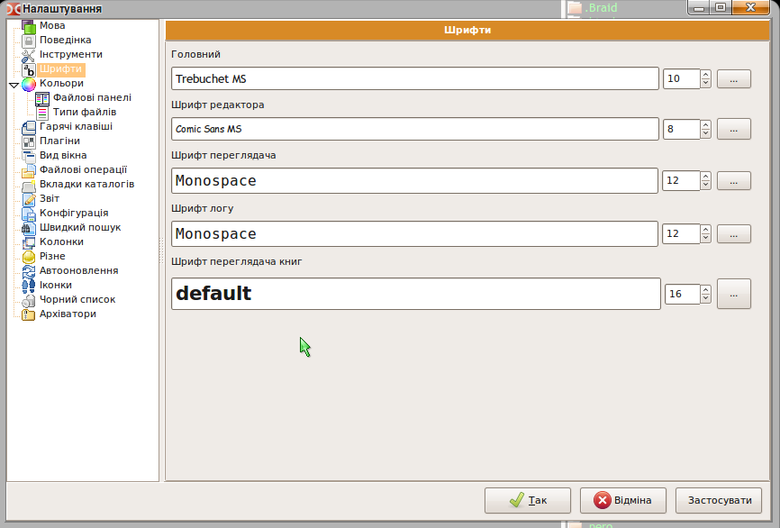
Тут можна вибрати шрифти для редактора (F4), перелядача (F3) і головний для програми, а також їх разміри. Нижній рядок під кожним вибором, служить для того, щоб подивитися як відображається обраний шрифт. Одне важливе зауваження: шрифти для редактора і переглядача повинні бути МОНОШИРНІ, інакше при перегляді і виділенні букви будуть налазити одна на одну.

Зверху звичайний шрифт, знизу моноширний.
Розділ Кольори, Файлові панелі

Одразу слід омовитися, що всі зміни, які будуть проведені в цьому разділі, ніяк не відобразяться на зовнішньому вигляді Double Commander. Це пов’язано з тим, що тут вказуються, скажімо так, глобальні налаштування, які приміняються тільки при створенні нового (свого) стилю. Коротко можно пояснити так: В Double Commander існує можливість вибирати стилі оформлення для кожної панелі окремо, більш того, не тільки для кожної панелі, але і для кожної ВКЛАДКИ!!! В зв’язку з цим, щоб налаштувати зовнішній вигляд командера, необхідно налаштовувати поточний стиль колонок (за замовчуванням їх створено два Default і Breif) і/чи створювати свої, щоб потім їх застосовувати для будь-якої вкладки, але про це, пізніше.
Тут можна вибрати кольори, які будуть використовуватися для оформлення файлових панелей. Колір тексту, Колір фону (існує можливість вибору двох кольорів фону, щоб оформити його як зебру))) Колір виділення, Колір курсору, а також Колір тексту під курсором.
УВАГА!!!! В графі "Фон" вказується колір пустого простору в файловій панелі.
Інверсне виділення — інвертує кольори виділеного тексту і виділеного тексту під курсором. Про кольорові налаштування більш докладно описано в розділі Колонки.
Розділ Кольори, Типи файлів
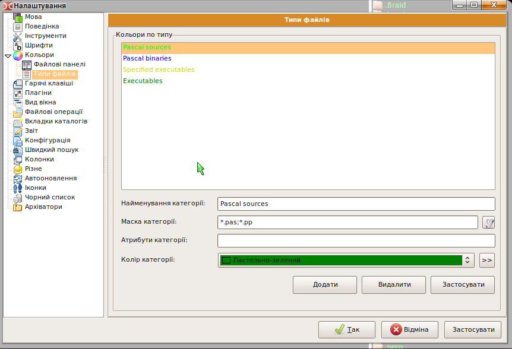
Тут можна вказати типи файлів, які повинні виділятися іншим кольором, відмінним від кольору шрифта.
В рядку Найменуовання необхідно вписати опис файлу, що він робить чи якою програмою відкривається (щоб потім не заплутатися).
В рядок Маска вписується маска (частини імені і розширення), по яким Double Commander буде їх розпізнавати. Якщо їх декілька, то вони вписуються через крапку з комою ";" без пробілів. Зірочка "*" означає будь-яку частину з будь-якою кількістю символів.
В рядок Атрибути вписуються атрибути файлів з допомогою яких також будуть розпізнаватися різноманітні їх виды, для позначення їх кольором.
Не забувайте натискати на кнопочку Застосувати після внесення змін в список чи у властивості.
Розділ Гарячі клавіши

Тут можна переназначити клавіши, котрі виконують які небудь команди, а також вказати параметри цих команд для виконання.
Категорії — в цьому полі відображаються категорії гарячих клавіш (комбінацій). Main — головна категорія.
Команди — список всіх доступних внутрішніх команд в Double Commander. Список представлений у вигляді таблиці з трьох колонок
Команди (вказуються назви всіх доступних команд)
Коментарі (короткий опис команди)
Гарячі клавіши (вказуються вже призначені (якщо є) комбінації клавіш)
Фільтр — аналогія швидкого пошуку, тільки по службовим командам. При введенні в це поле яких-небудь символів, виводяться тільки ті команди, назви якихх починаються з цих символів.
Гаряча клавіша — вказується нова комбінація клавіш, яка буде призначена для цієї команди. Треба помістити курсор в цей рядок, і натиснути відповідну гарячу комбінацію клавіш
Гарячі клавіши — в цьому полі показуються вже призначені комбінації клавіш для цієї команди. А також виводиться попередження, якщо нова комбінація вже використовується в другій команді
Параметри — служить для призначення будь-якого параметру який буде використаний при виконанні цієї команди
Встановити — встановлює нову комбінацію клавіш. З рядка "Гаряча клавіша", комбінація буде переміщена в поле "Гарячі клавіши", і почне відображатися у відповідній колонці
Очистити — видаляє комбінації гарячих клавіш, вибраних в полі Гарячі клавіши
Наприклад щоб встановити зміну дисків з Alt+F1 і Alt+F2 на Ctrl+F1 і Ctrl+F2 (в лінуксі перші дві комбінації зайняті) необхідно виділити команду cm_RightOpenDrives, встановити курсор в поле "Гаряча клавіша" і натиснути комбінацію клавіш Ctrl+F2 яка з’явиться в полі. Тепер необхідно натиснути "Встановити" і все. Точно так само зробити для cm_LeftOpenDrives і Ctrl+F1.
Розділ Плагіни покищо пропущу, тому, що в теперішній час не можу знайти окремі плагіни для Лінукса, а за замовчуванням нічого міняти не потрібно. Єдине, що варто зазначити, то це те, що плагіин для перегляду відео працює тіольки якщо в системі встановлений Mplayer.
Розділ Вид вікна

Тут можна змінити вид головного вікна Double Commander. Думаю, не варто багато описувати, проблем виникнути тут не повинно. Ось скріншот програми, з відключеними елементами керування і додатковими вікнами.
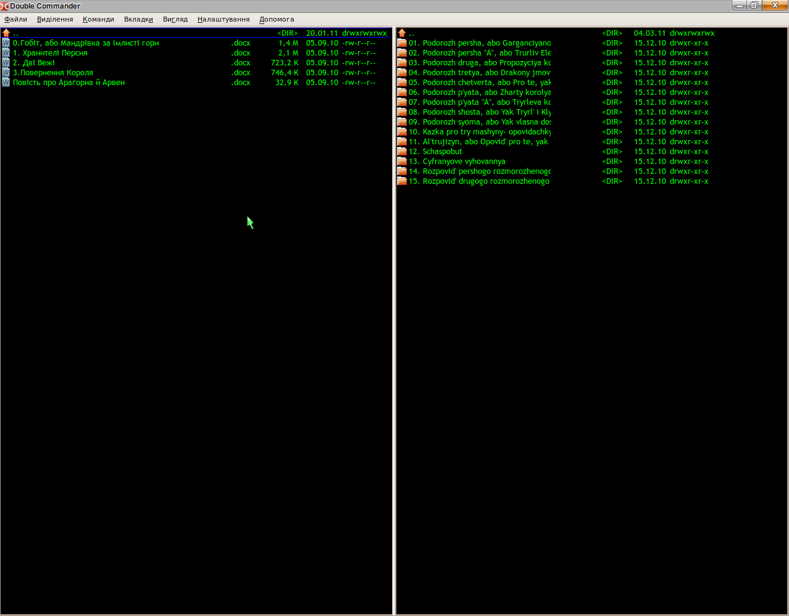
Розділ Файлові операції

Размір буфера (Кб) — тут вказується яка кількість пам’яті буде виділятися для буфера програми, при работі з файлами.
Використовувати відображення в пам’ять, при пошуку тексту у файлах — при такому пошуку, файл робиться частиною віртуальної пам’яті, і виконується її перегляд на наявність потрібного тексту. Звернення до нього йде не як до файлу, а як до оперативної пам’яті (так швидше, але потрібен потужний компютер).
Використовувати поток, при пошуку тексту у файлах — якщо використовуєтся цей метод, то файл зчитується частинами, і в кожній частині іде пошук потрібного тексту (повільніше, але потребує менше ресурсів).
Кіл-ть проходів стирання (Wipe)(команда cm_Wipe) — ця функція для повного знищення файлів з жорсткого диску. При стиранні файлу з використанням цієї функції (Alt+Del за замовчуванням), місце на диску, де був файл, кілька разів перезаписується, і тут можна вказати число перезаписів.
Скинути позначку "Тільки для читання" — при роботі з файлами (копіювання, переміщення) Double Commander буде скидати цю позначку в Windows, ставити позначку дозволу на запис, якщо вона відсутня в Linux.
Опрацьовувати коментарі з файлами/папками — використовується при работі з коментарями.
При перейменуванні виділяти тільки ім’я файла (без розширення) — при перейменуванні буде виділено тільки ім’я файла. Розширення виділенням не охоплюється.
Показувати панель вибору вкладок в діалозі копіювання/переміщення — якщо при копіюванні/перемещенні в панелі відкрито кілька вкладок, то буде наданий вибір вкладки в яку буде скопійований/переміщений файл.
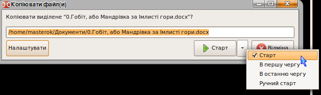

Розділ Вкладки каталогів
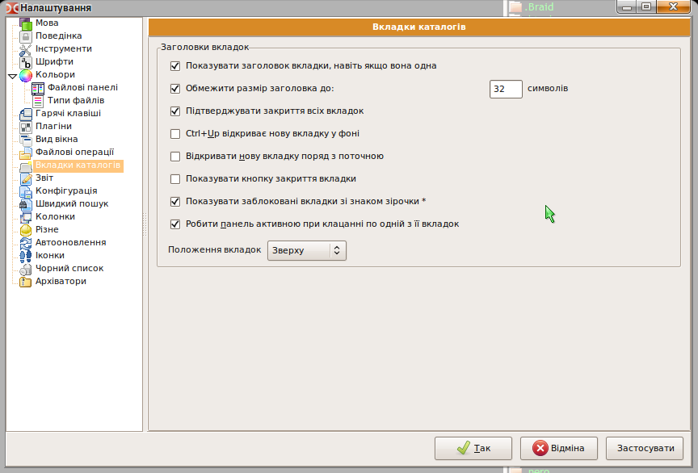
Показувати заголовок вкладки, навіть якщо вона одна — якщо в панелі відкрита тільки одна вкладка, то для зручності панель з заголовками зникає, але якщо відмічений даний пункт, то залишається.
Розміщувати вкладки в кілька рядів — коли відкрита велика кількість вкладок, і вони не поміщаються в один рядок, то за замовчуванням з боків з’являються стрілки, за які і уходять заголовки вкладок. А якщо відмічена ця опція, то заголовки вкладок вишиковуються в два чи три ряди.
Обмежити розмір заголовку до — якщо щойно створена вкладка має дуже довгу назву, то вона може займати половину ширини панелі, щоб такого не було назву вкладки можна обмежити.
Підтверджувати закриття всіх вкладок — щоб вберегти від випадкового виконання команди Видалити всі вкладки.
Показувати заблоковані вкладки зі знаком * — для того щоб відрізнити заблоковані вкладки від не заблокованих, у назві заблокованих вкладок попереду буде зображатися зірочка.

Здесь вкладка wine заблокирована, а rust не заблокирована.
Робити панель активною при клацанні по одній з її вкладок — якщо ця функція ввімкнена, то при переключенні мишкою на вкладці сусідньої панелі, фокус автоматично будет переноситься на неї. Курсор будет знаходитися в тому положенні, в якому знаходився до переключення з цієї вкладки.
Раздел Протокол
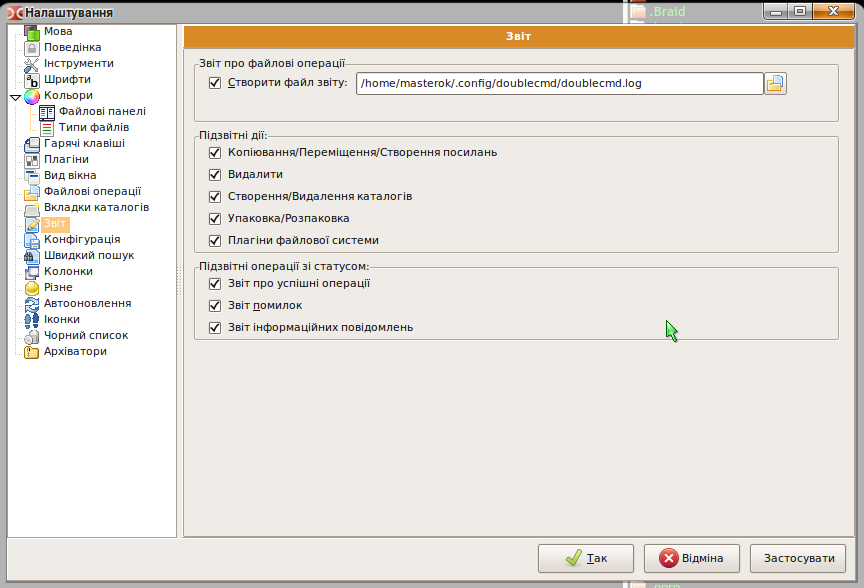
Здесь можно выбрать куда и в какой файл Double Commander будет записывать отчет об операциях. А также выбрать протоколируемые операции, их вид и тип.
Розділ Конфігурація
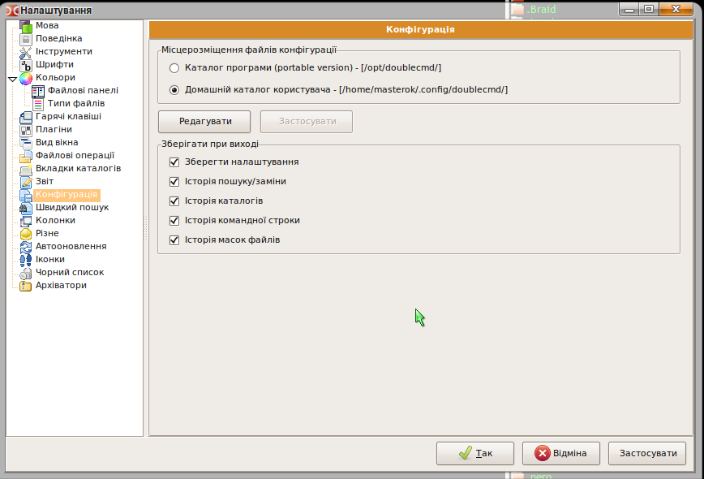
Тут вибирається місце зберігання всіх файлів конфігурації
Редагувати — щоб власноруч відредагувати різноматні налаштування, в головному файлі конфігурації doublecmd.ini.
Також можна налаштувати, в якому вигляді Double Commander буде зберігати історію, це корисно для полегшення навігації і роботи.
Історія каталогів — зберігає історію всіх відвіданих каталогів.
Історія командної строки — зберігає історію команд, котрі вводилися в цю строку.
Історія масок файлів — допомагає згадати які файли ви вже шукали і взагалі які маски файлів ви застосовували.
Разділ Швидкий пошук
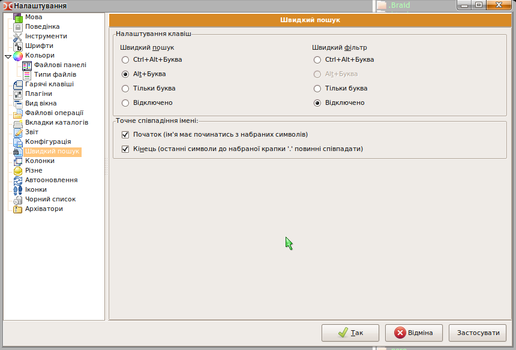
Швидкий пошук, це пошук файлів по списку у файловій панелі. Тут можна опреділити при якій комбінації гарячих клавіш він буде вмикатисяся. А також визначати деякі параметри пошуку.
Точне співпадіння імені файлу початковим буквам в пошуку — це значить, що курсор буде пересунутий на тот файл в початку імені якого будуть набрані в рядку пошуку букви чи знаки.
Кінець (останні символи до набраної точки '.' повинні співпадати) — це пригодиться в тому випадку, якщо відомо тільки закінчення назви файла, наприклад закінчується на ...us.ext, тоді в швидкому пошуку можна набрати *us.ext і курсор перейде на перший файл котрий відповідає цій масці.
Разділ Колонки

В цьому розділі можна налаштувати вид файлових панелей, кідькіть і склад колонок, стиль їх оформлення, колір, шрифт, колір шрифта і т. д.
Налаштувати колонки для файлової системи — при наявності WFX плагінів, для відображення інших файлових систем (які відрізняються від стандартних і недоступні з допомогою звичайних засобів OC), в цьому рядку з’явиться вибір можливості редагування стилів, спеціально для цієї нестандартної файлової системи.
В головному вікні відображається список стилів оформлення колонок які вже є в наявності. Після встановлення програми за замовчуванням їх створено вже два: Default і Brief. (на скріні дододаний мій стиль Власний).
Створити — створити новий свій стиль колонок. Відкриться вікно редактора стилів, де буде запропоновано ввести свою назву і далі вже налаштовувати свій стиль.
Видалити — видаляє обраний стиль колонок.
Копіювати — копіює стиль. При цьому з’являється ще один стиль, з такими самими налаштуваннями, як і у того який копіювали, а в кінці назви нового стилю дописується _Copy. Це може стати у пригоді в тому випадку, якщо необхідно створити стиль, схожийй на якийсь з тих що є в наявності, при цьому не видаляючи попередній.
Редагувати — відкриває діалог редактора стилю колонок.
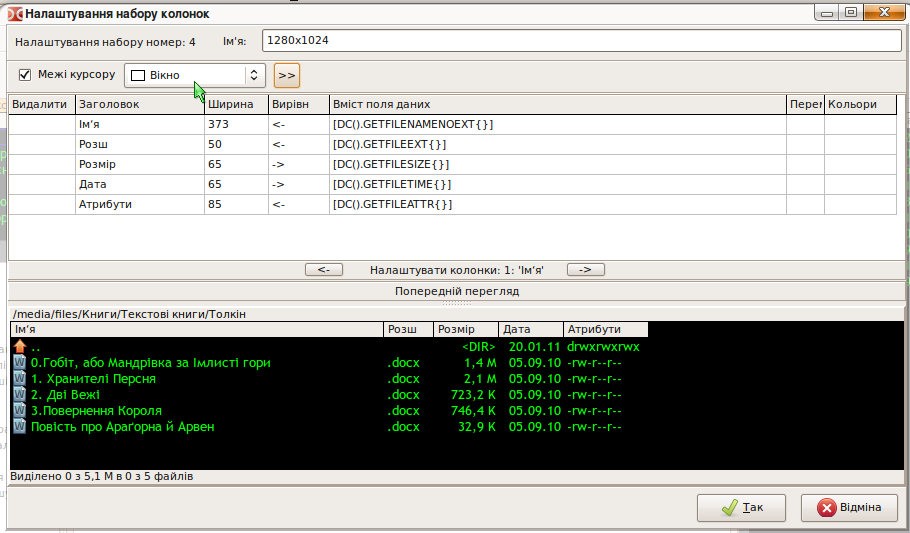
Налаштування набору номер: 1 Ім’я — тут вказується ім’я набору. Номер набору береться як порядковое число під яким він знаходиться в головному вікні розділу Колонки.
Cursor border (рамка курсора) — можно вказати якого кольору буде рамка у курсора в даному наборі , чи взагалі відключити її.
Таблиця налаштувань — ця таблиця оприділяє кількість колонок, їх назву, зміст, розташування, розмір.
Налаштувати колонку:1 'Ім’я' — в цьому рядку з допомогою кнопок зліва і справа можна вибирати, яку колонку на даний момент треба редагувати. А також відкривається діалог налаштування кольорів і шрифів
Попередній перегляд — в цьому вікні видно як буде виглядати панель з новими налаштуваннями, поки їх ще не застосували.
Розглянемо таблицю
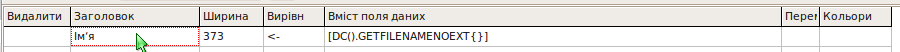
За налаштування однієї колонки, відповідає один рядок у цій таблиці. Тобто якщо у таблиці 5 рядків, то колонок в цьому стилі буде також 5.
Параметри, які визначає таблиця для колонки:
Видалити — дозволяє видалити будь-який рядок, в якому буде натиснутаа відповідна комірка.
Заголовок — в цьому полі вказувається назва колонки, те що буде відображатися у панелі заголовків колонок. Сюди можна вписати будь-яке слово, бажано, щоб воно відображувало зміст цієї колонки.
Ширина — це ширина колонки (в пікселях), яка буде при запускуе DC якщо вибраний даний стиль. Ширина повинна залежати від вмісту колонки. Якщо це розширення файла, то нема сенсу робити цю колонку широкою.
Вирівнівання — вказує до якого краю буде притиснута назва колонки. Має три значення
(< -) вирівнювання по лівому краю
(- >) вирівнювання по правому краю
( = ) вирівнювання по середині
Вміст поля даних — в цьому полі вказується саме основне, що буде містити колонка — дані про файл чи папку. Щоб вибрати значення, треба натиснути на плюсик, який з’являється в кутку цього поля. Має наступні значення:
GETFILENAME — відображує назву папки чи файла з розширенням (text.txt).
GETFILENAMENOEXT — відображує назву папки чи файла без розширення (text).
GETFILEEXT — відображує розширення файла (всі символи, котрі ідуть з кінця назви до крапки, наприклад .txt чи .example).
GETFILESIZE — відображує размер файла чи папки. Вигляд відображення залежить від опції Короткий размір файла у разділі Поведінка.
GETFILETIME — відображує дату створення і зміни файла чи папки. Вигляд вибирається в разділі Поведінка.
GETFILEATTR — відображує атрибуты файлів і папок. Рівень доступу до них.
GETFILEPATH — відображує шлях до каталогу, в якому знаходиться файл чи папка. Це значення використовується у випадку відображення результатів пошуку файлів. Для звичайної роботи в Double Commander не представляє інтересу.
GETFILEGROUP — відображує назви групи, яка являється власником цього файла чи папки.
GETFILEOWNER — відображує ім’я власника файла чи папки.
GETFILELINKTO — відображує шлях і якщо є, то і файл, на який вказує посилання (символічне посилання), якщо вона присутня у каталозі.
Перемістити — дозволяє переміщати рядки. Чим вище рядок, тим лівіше буде відображатися колонка, параметри якої вказані в цьому рядку.
Кольори — дозволяє налаштувати кольори і шрифт, які будуть використовуватися в даній колонці. Для редагування кольорів, з’являється ось така частина вікна.
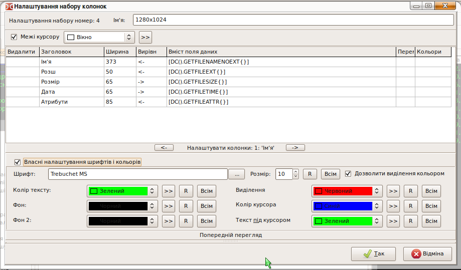
Можна отримати таке вікно, натиснувши на кнопки стрілок по бокам від рядка Налаштувати колонку: 1:'Ім’я'.
Шрифт — в цьому рядку можно вибрати шрифт, який буде використовуватися для відображення вмісту тільки даної колонки. Щоб вибрати шрифт з набору системних, необхідно натиснути на кнопку «...» поряд з рядком.
Розмір — тут можна вказати розмір шрифта, який буде використовуватися.
R — ця кнопка повертає початкові встановлення шрифта.
Всім — поширює це налаштування шрифта на інші колонки, таким чином у всіх інших колонках, шрифт буде такий як і в цій.
Дозволити виділення кольором — дана опція включає і відключає можливість відображення назв файлів іншим кольором, обраних в разділі Кольори Типи файлів.
Існує можливість вибрати колір для наступних елементів: Колір тексту, Фон і Фон2, Виділення, Колір курсора, Текст під курсором, котрі будуть використовуватися в даній колонці.
Трошки про кольори
Присутні 20 попередньо встановлених кольорів від сірого до чорного (ну через червоний і зелений там))). А також є, що саме чудове, можливість виставляти колір, такий самий як і у елементів оформлення загальної теми системи від смуги прокрутки, до градієнта неактивного заголовку. Тобто, якщо буде змінюватися тема, то буде змінюватися і стиль колонок!!!! Отже, якщо застосовується тема, в оформленні якої присутні текстури, то ці текстури можна застосувати і для оформлення колонок (на знімку для Виділення обраний Червоний колір, а для Курсора обраний колір з теми оформлення з елементу Виділення).
>> — кнопка для визначення будь-якого довільного кольору з палітри. Також присутній інструмент Піпетка для визначення кольору який сподобався.
R — ця кнопка повертає початкові налаштування кольору. В даному випадку, колір буде братися з налаштувань, які обрані в розділі Кольори, Файлові панелі.
Всім — поширює це налаштування кольору і на інші колонки.
Приклади використання залежності налаштувань колонок від теми, зправа залежить, зліва ні.
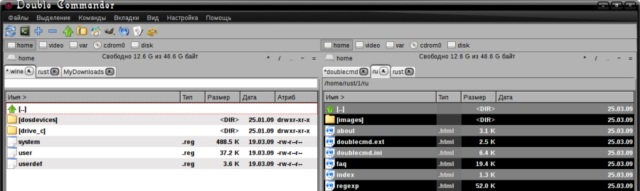
Приклад незалежних налаштувань в кажній колонці.

Приклад використання текстур з теми оформлення в оформленні колонок.
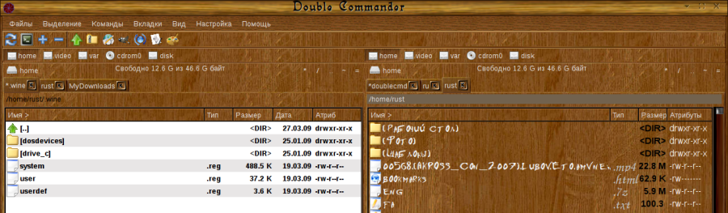
Розділ Різне

Вертикальні лінії — включає вертикальні ліній, які візуально відокремлюють колонки одна від одної.
Горизонтальні лінії — включає відображення горизонтальних ліній, які візуально відокремлюють рядки один від одного.
 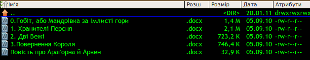
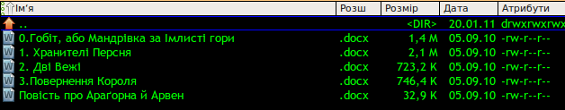
На лівому малюнку ввімкнені обидві опції, на правому обидві відключені.
Показувати некритичні повідомлення про помилки (з однією кнопкою "Ок") — якщо програма виконає дію чи операцію з помилкою, і при цьому не станеться ніяких фатальних втрат, то буде показана помилка з якимсь вмістом, з однією кнопочкою "Ок". Інакше помилка виводитися не буде.
При виділенні файлів Пробілом переміщати курсор на слідучий файл — реалізує спосіб виділення кількох файлів з допомогою клавіши пробіл. При затиснутому пробілі курсор опускаеться вниз відмічаючи файли. За замовчуванням комбінація Shift+Вниз чи Shift+Вверх.
Показувати квадратні дужки навколо імен папок — дозволяє візуально папки відрізняти від файлів не дивлячись на їх розширення, навіть при відключеному показі іконок. Якщо не відмічено, то папки позначаются просто своєю назвою без дужок.
Розділ Автооновлення
Дозволяє Double Commander відсліжковувати зміни в каталозі який відкритий у файловій панелі. Автоматизованный варіант Ctrl+R.

Оновлювати після створення, копіювання чи видалення — повідомляє командеру про зміни складу каталогу, який відкритий у файловій панелі, при створенні, видаленні і перейменуванні яких небудь файлів чи папок з сторонньої програми (архіватор, другий файловий менеджер).
Також оновлювати при зміні розміру, дати чи атрибутів — повідомляє про зміни в каталозі разміру папок і файлів, дати доступу до них чи зміні їх атрибутів (прав доступу), за допомогою других програм.
Не реагувати на зміни якщо вікно у фоні — якщо Double Commander згорнутий чи знаходиться на задньому плані (не активний), то при включенні цієї опції, він не буде отримувати інформацію про зміни складу каталогу, який був відкритий в його файловій панелі.
Для наступних шляхів і підкаталогів — в цьому рядку вписуються місця, про які інформація не повинна оновлюватися, тоб то Double Commander не буде слідкувати за змінами на цих дисках чи у папках. такі місця вписуються з повним шляхом до них, через крапку з комою ";" без пробілів (наприклад, /home;/media/cdrom).
Пункт Файлові асоциації (команда cm_FileAssoc)
Цей пункт відкриває вікно налаштувань файлових асоціацій. Всі асоціації записуються у файл doublecmd.ext Приклад файла з асоціаціями є в директорії з налаштуваннями програми, під назвою doublecmd.ext.example.
З допомогою цього розділу, можна налаштувати асоціації файлів з різними програмами, а також призначити команди і скрипты які будуть виконуватисяся над файлами, якщо асоціації, котрі є в системі нас не задовільняють. Вказані команди будуть виводитися в контекстному меню (команда cm_ContextMenu).
Типи файлів — поле містить список груп розширень. В кожній групі може міститися велика кількість розширень файлів, і таку групу можна асоціювати з різноманітними програмами.
Додати — додає нову групу. Буде запропоновано ввести назву групи, яке потім з’явиться в списку. Наприклад, Sound.
Видалити — видаляє обрану групу.
Перейменувати — дозволяє задати групі нове ім’я, для більш точного відображення складу групи.

Розширення — в цьому полі вказуються розширення, які входять у виділену групу. Наприклад, mp3, wma, ogg і т. д.
Додати — додає розширення у групу.
Видалити — видаляє вибране розширення із групи.
Команди — поле, яке містить список дій і команд, які можна буде виконати над файлами, котрі мають розширення з даної групи.
Додати — додає нову команду в список.
Видалити — видаляє вибрану команду із списку.
Вгору, Вниз — пересуває команду по списку.
Дія — в цьому рядку вказується як програма буде виконувати нижче наведену команду з обраним файлом. Може приймати наступні значення:
З випадаючого меню (кнопка з плюсиком зправа від рядка)
Open (Відкрити) — команда буде виконуватися після натиснення Enter на клавіатурі (подвійне клацання лівою кнопкою миші).
View (Переглянути) — команда буде виконуватися при натисненні на кнопку для швидкого перегляду (F3).
Edit (Редагувати) — команда буде виконуватися при натисненні на кнопку для редагування (F4).
Інші деії відображаються ільки в підменю "Команди" контекстного меню файла і в списку команд.
Команда — це будь-яка однорядкова команда з оболонки робочого середовища, в якій можна підставляти відповідні макроси (кнопка з плюсиком зправа від рядка). Макроси можуть бути наступними (залежні від регістру):
{!VFS} — для архівів — використовувати віртуальну файлову систему
{!EDITOR} — викликає редактор (вбудований чи зовнішній в залежності від налаштувань)
{!VIEWER} — викликає переглядач (аналогічно)
{!SHELL} — використовує термінал із конфігурації для запуску програми
<?команда?> — виконує 'команда' в системній оболочці, зберігає вивід у файл і передає його як параметр попередній команді
%f — ім'я файла
%d — каталог
%p — шлях (каталог+і’мя файла)
Наприклад:
audacious '%p' — відкрити файл в програмі Audacious.
mkisofs -o %p.iso -jcharset koi8-r -r %p — створити образ диску з папки. Образ буде створений в тому самому каталозі, і названий так само як і папка. (ця команда тільки для папок).


Для того щоб Double Commander виконував якісь дії над папкою (а не тільки над файлом), треба створити нову групу під назвою Dir, а в розширеннях для неї вказати folder. Тоді всі дії внесені в список команд в цій групі, будуть відображатися в підменю 'Команди' контекстного меню папки. Наприклад, для Ubuntu відкрити папку в Nautilus з правами Root треба в рядкуе Дія вказати Open as root, а в строку Команда вписати команду gksu nautilus '%p'.
Іконка — тут вказується шлях до файлу іконки, у вигляді якої будуть відображатися всі файли які мають розширення, вказане в даній групі.
3.1.7. Меню "Допомога"
Тут можна отримати доступ до довідкової інформації і відомостям про програму:
Зміст — відкриває початкову сторінку цієї довідки
Комбінації клавіш —відкриває сторінку зі списком гарячих клавіш
Відвідати домашню сторінку Double Commander — за наявності інтернету дозволяє відвідати web-сторінку проекту
Про програму... — інформація про версію і разрабниках
3.3. Панель кнопок дисків
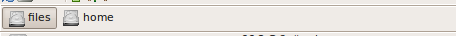
Кнопки дисків дозволяють швидко змінити диск просто натиснувши на відповідну кнопку. Клік правою клавішею миші по кнопке викликає контекстне меню, з якого можна провести операції монтування/розмонтування, форматування і іних. (залежить від операційної системи).
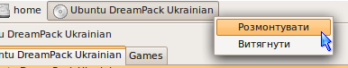
3.4. Кнопка меню дисків

Правильніше було б сказати "інформаційно-навігаційна" панель :-), так як помимо самої кнопки меню дисків тут відображається інформація про загальний об’єм диску і наявності вільного місця. Тут же знаходяться кнопки, які полегшують навігацію — « / .. * ~ =».
Кнопка меню дисків тут, в принципі для того щоб просто змінити диск, вибравши з випадаючого меню (команда cm_LeftOpenDrives для лівої панелі і cm_RightOpenDrives — для правої). Цю саму дію можна виконати з допомогою гарячих клавіш (Alt+F1 і Alt+F2 за замовчуванням, але в Лінуксах краще змінити ці комбінації, так як вони вже зайняті).

Також можна трошки пояснити призначення допоміжних кнопок:
«/» — перехід в корінь системи
«..» — перехід на один каталог (рівень) вище
«*» — закладки (аналог обранного). Докладніше в розділі Личный список каталогов

«~» — перехід в домашній каталог
«=» — аналогічно команді Дві однакові панелі (Alt+Z за замовчуванням, ).
3.5. Панель заголовків вкладок

Служить для відображення всіх вкладок і для переключення між ними (Ctrl+Tab і Ctrl+Shift+Tab за замовчуванням). По кліку правою кнопкою миші відкривається список вкладок. В заблокованих вкладках перед назвою відображаеться зірочка (якщо ввімкнена опція Показувати заблоковані вкладки зі знаком *).
3.6. Ім’я поточного каталога
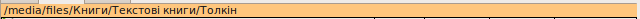
Cлужить для відбраження імені поточного каталога. При кліку левою кнопкою миші випадає історія змени каталогів (команда cm_DirHistory)
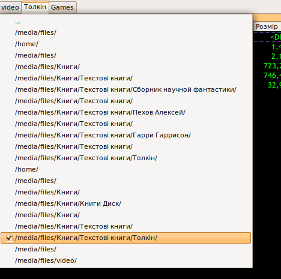
Клікнувши правою, можна скопіювати поточне положення каталога чи же ввести вручну потрібний шляхь (корисно для доступу до мережевих ресурсів).
3.7. Панель заголовків колонок
Вказує який параметр файлу чи папки відображаеться в даній колонці. При кліку лівою кнопкою миші виконується сортування вмісту файлової панелі по будь-якому з параметрів, що маються у заголовку. При кліку правою кнопкою викликається діалог вибору стиля колонок, і доступу до налаштувань стилів, включаючи поточний.

Defaut, Brief — стилі налаштування колонок які вже є в наявності
Налаштувати поточний набір колонок — відкривається діалог налаштування стилю колонок, який використаний в даній файловій панелі. Докладніше в розділі Налаштування набору колонок
Налаштувати набори колонок — відкриває діалог Колонки в розділі Основні
3.8. Рядок стану
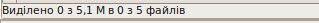
Відображає кількість і розмір виділених файлів з загальної кількості і розміри файлів в каталозі.
3.9. Вікно консолі
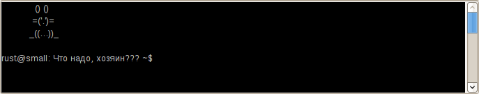
Це інформаційне вікно, тут виводиться інформація про те які дія виконує програма, в консолі (оформлення, показане на скріншоті, це налаштування консолі, і до програми не має жодного відношення).
3.10. Командна строка

Командний рядока використовується для введення команд вручну. На початку рядка вказаний шлях до каталогу, в якому буде виконуватися команда, введена тут (на малюнку команда буде виконуватися в каталозі /home/masterok/). Кнопка зі стрелкою вниз в кінці рядка відкриває історію команд, що вводилися в нього.
При кліку правою кнопкою миші на рядку отримуємо випадаюче меню:
 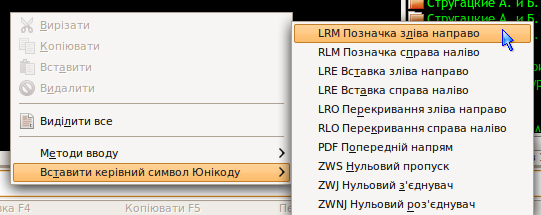
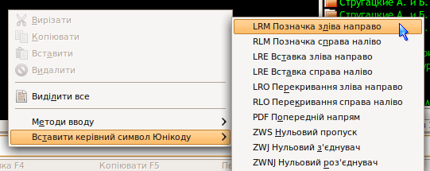
В якому окрім стандартних функцій Вирізати, Копіювати, Вставити, Видалити, Виделити все, також маються два підменю Методи вводу і Вставити керуючий символ Юнікод.
3.11. Панель кнопок функціональних клавіш
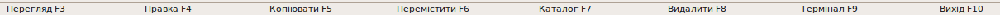
Відображає призначення гарячих клавіш відповідній дії і забезпечує швидкий доступ до найпоширеніших команд з допомогою миші.
Created by Rustem (dok_rust@bk.ru).
Українською переклав Максим aka Ma$terok